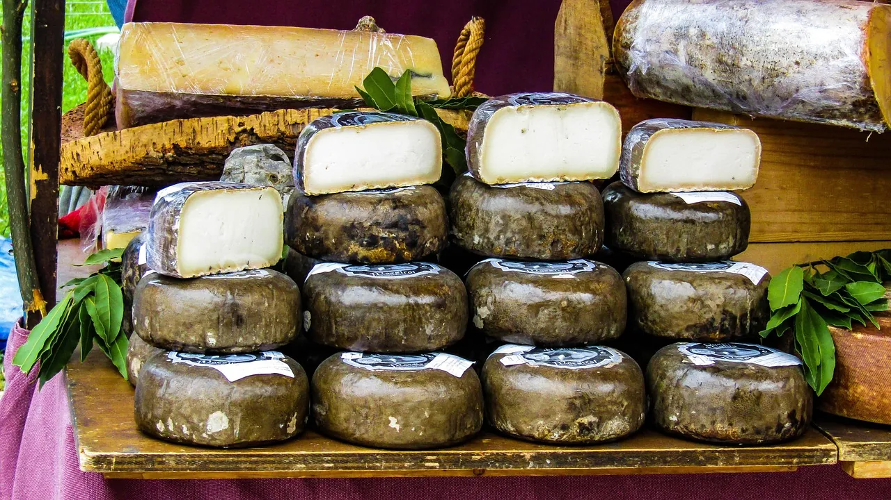
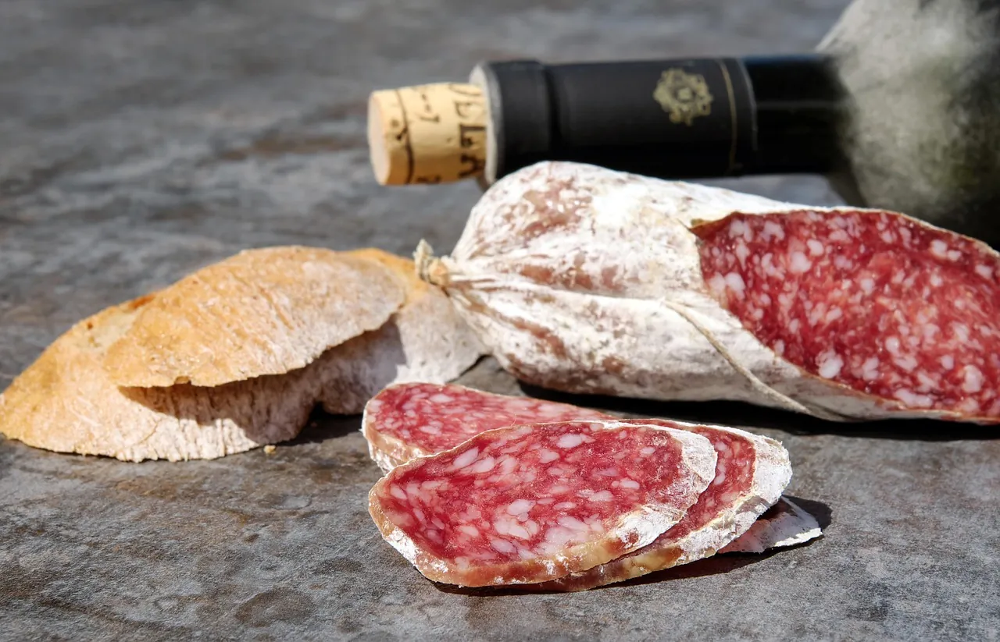
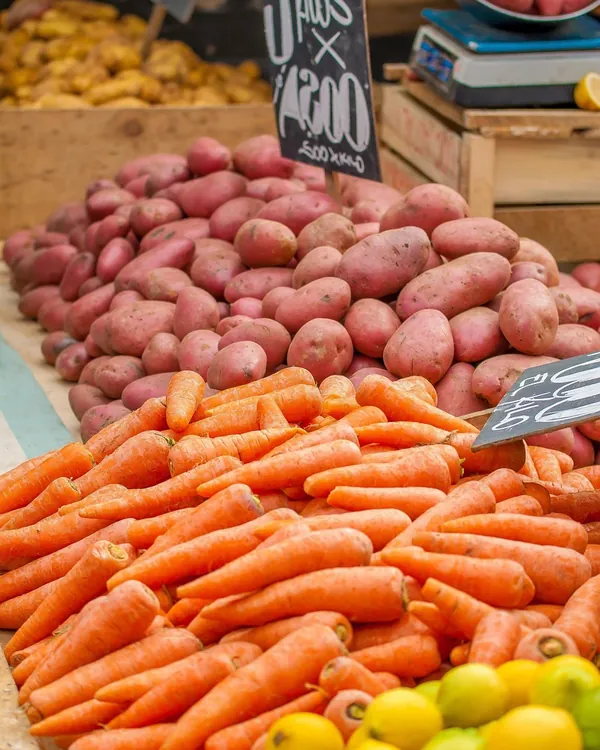
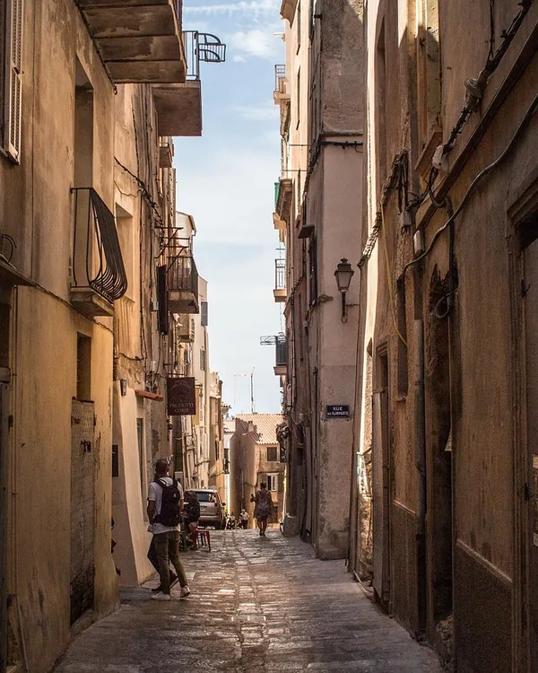
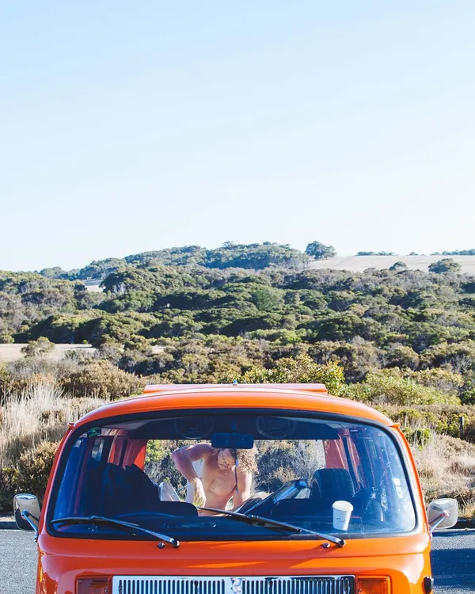
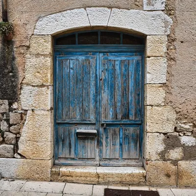
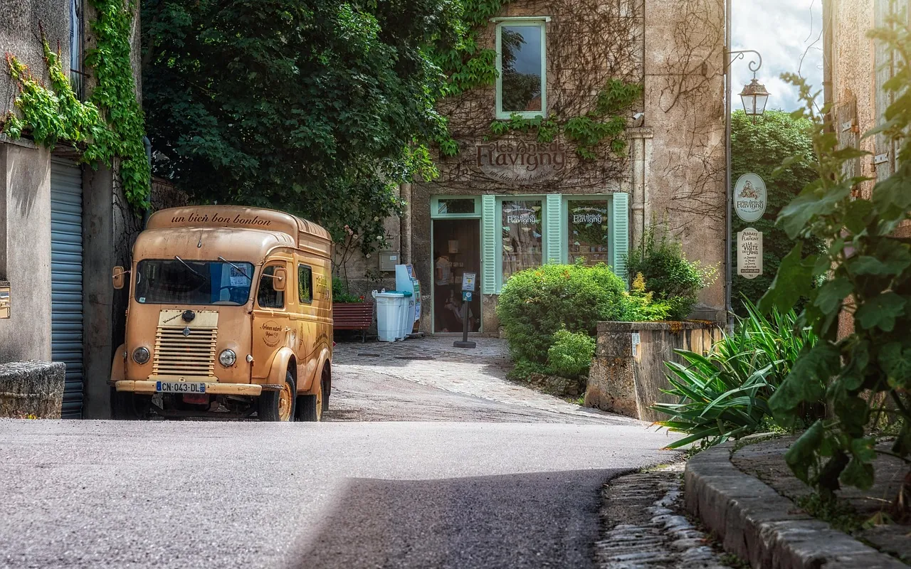

Tout ce qu'il faut, au prix du village
Tranchée devant vous, aussi fine que vous voulez.
Prix au comptoir, à titre d'exemple.

Le magasin, de près

Les tommes de la vallée et du Niolu


La coupe, la balance, le saucisson du comptoir et les cagettes du jardin d'à côté.
Une journée au magasin
Sept heures, le rideau
La place se réveille. Le café se prend debout, au comptoir, avec les nouvelles du village.

Le pain du four d'en bas
Il arrive tiède vers sept heures et quart, et se tranche à la demande sur la planche du comptoir.
Les légumes du jardin
Le voisin passe avec ce qui a poussé : tomates l'été, courgettes, châtaignes à l'automne.

Mardi et vendredi, la camionnette
Elle part à neuf heures et demie, chargée des commandes, pour les hameaux de la vallée.

Midi et demi, la pause
On ferme pour déjeuner. On rouvre à seize heures, quand le soleil quitte la place.

Le soir, la coupe
Jusqu'à dix-neuf heures trente, le jambon se tranche pour le dîner et la tomme se pèse.


La tournée des hameaux
Commandez la veille avant 18 h : la camionnette vous apporte la coupe, le pain et le gaz, à payer à la livraison ou sur le carnet.
La camionnette passe le mardi à Tolla et Ocana, le vendredi à Eccica, Suarella et Cauro.
Une commande pour une fête ? Rosa répond au téléphone.
Appeler ou écrire
04 00 00 00 00 bonjour@zia-rosa.frPlace de la fontaine, vallée du Prunelli. Espèces, carte, ou le carnet réglé en fin de mois.